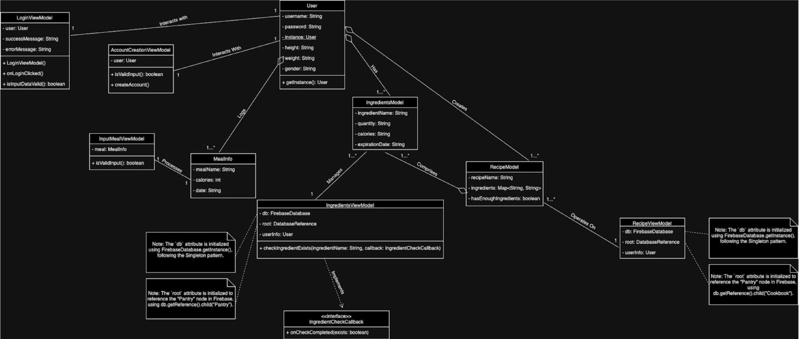
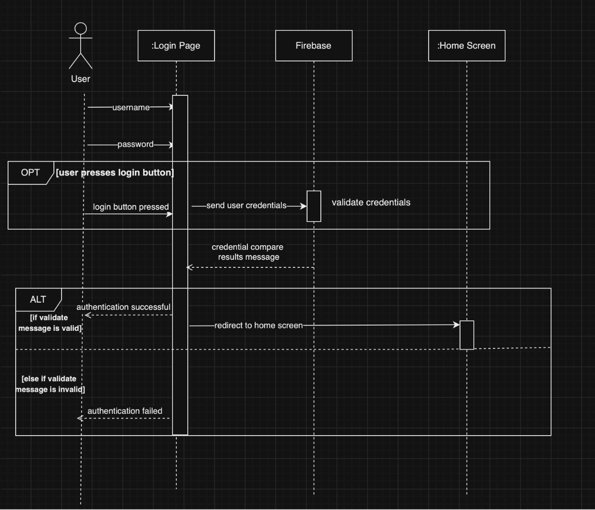
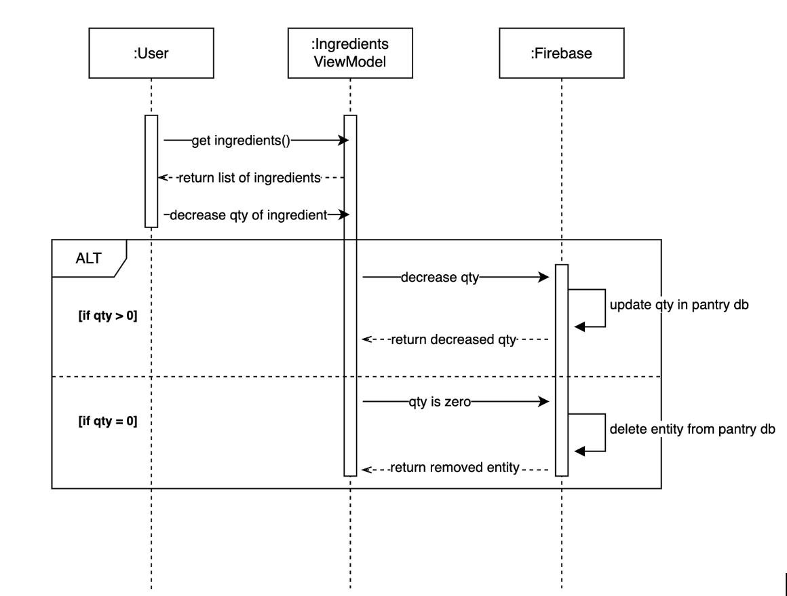

Design & Architecture
The architecture of GreenPlate is built on the Model-View-ViewModel (MVVM) pattern, which facilitates a clear separation of concerns and enhances the maintainability and scalability of the application. This architectural choice is ideal for handling the dynamic features provided by GreenPlate. Several design patterns are employed to ensure the robustness and flexibility of the application:
- Singleton: Used for managing user sessions, ensuring that only one user instance is active at any given time.
- Strategy: Allows for flexible sorting mechanisms in recipe management, where different sorting strategies can be applied dynamically.
- Factory: Used for creating instances of various models and views, simplifying the management of these components.
UML Diagrams
- This Design Class Diagram (DCD) provides an overview of the classes and relationships in the "GreenPlate" app.
- 
- We created two Sequence Diagrams (SDs) in order to visually represent two different use-case scenarios.
- Scenario 1: The scenario we chose to model for the first sequence diagram is that the user has already created an account in the application and uses their credentials to log into the application and they are directed to the home screen. This use case would occur for any user that has previously created an account and will be directed to the home screen if they have logged in successfully. If the user has not logged in successfully (their credentials are invalid/incorrect) they will stay on the login screen and an “authentication failed” toast message will pop up. The SD incorporates the following 3 classes/modules: LoginPage, Firebase, Home Screen. Both an OPT and ALT structure are present in the SD as the opt occurs if the user presses the login button and the ALT indicates the paths of actions if the user’s authentication was successful or not.
- 
- Scenario 2: Another scenario we had chosen to model with the sequence diagram is that the user is using a certain ingredient to make a dish. The user is on the home screen and navigates to the ingredients screen. Then the user presses the decrease button next to the label of their selected food and then the quantity decreases. If the quantity of their selected ingredient is > 0, a success message occurs, and the quantity is decremented in the pantry database and populates on the screen. Otherwise, if the quantity of their selected ingredient is zero, the ingredient is removed from the pantry database as an entry and is removed from the screen.
- 
- We created a System Sequence Diagram (SSD) where the system is treated as a black box for the third use case:

- Main Success Scenario: The User opens the account creation screen to create a new account and enters their email address in the 'Email' field and enters their password in the 'Password' field. The User then taps the 'Create Account' button. The system calls the createAccount method with the entered email and password, validates the input, and attempts to create a new user account with the provided credentials. If account creation is successful, the system displays a message "Account successfully created." to the User. The User is now able to log in with their new credentials.
- Alternative Flows: If the system fails to create a new account (due to a network issue, duplicate email, or other reasons), it displays a message "Authentication failed." to User.